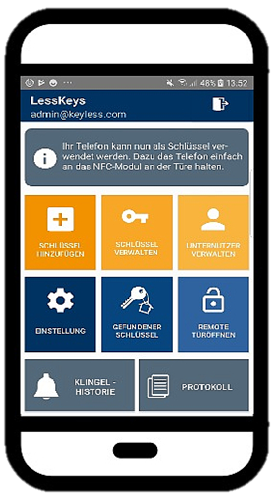

LessKeys is a multi-lock system aimed at apartment buildings. The project was started by three students during research for their bachelor thesis at the University of Innsbruck.
It's aimed to be a basic and simple implementation of a smart-lock system, designed for multi-apartment buildings with respect to the privacy and security aspects that come with such a use-case.
The goal of the project is to provide a basic pattern for developing such a system.
During development the focus was on user privacy and the usage of the "Near Field Communication" standard (NFC).
The project itself is devided into four essential components. Those are the android app, the server application, the lock software and the web-app.
The android-app is the central control element of the system for appartment owners, property managers and tenants.
The main functionalities of the LessKeys-App are opening locks, reading and writing NFC chips, authorization management and lock control.

An application designed as a communication point between the different tiers, while also functioning as the central data storage in combination with a SQL-based db.
A program suited to run on a Raspberry Pi with special Modules, like a PN532 NFC reader, etc.
Together with a 5V relais, the SoC can function as a controller for an electric door lock.
A simple way for admins to do basic configuration and extensive log inspections.
Footer